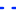

<!doctype html>
<html lang="en">
    <head>
        <meta charset="utf-8">
        <meta http-equiv="X-UA-Compatible" content="IE=edge">
        <meta name="viewport" content="initial-scale=1,user-scalable=no,maximum-scale=1,width=device-width">
        <meta name="mobile-web-app-capable" content="yes">
        <meta name="apple-mobile-web-app-capable" content="yes">
        <link rel="stylesheet" href="css/leaflet.css"><link rel="stylesheet" href="css/L.Control.Locate.min.css">
        <link rel="stylesheet" href="css/qgis2web.css"><link rel="stylesheet" href="css/fontawesome-all.min.css">
        <link rel="stylesheet" href="css/leaflet-control-geocoder.Geocoder.css">
        <link rel="stylesheet" href="css/leaflet-measure.css">
        <style>
        html, body, #map {
            width: 100%;
            height: 100%;
            padding: 0;
            margin: 0;
        }
        </style>
        <title>Movilidad urbana y Señalización</title>
    </head>
    <body>
        <div id="map">
        </div>
        <script src="js/qgis2web_expressions.js"></script>
        <script src="js/leaflet.js"></script><script src="js/L.Control.Locate.min.js"></script>
        <script src="js/multi-style-layer.js"></script>
        <script src="js/leaflet.rotatedMarker.js"></script>
        <script src="js/leaflet.pattern.js"></script>
        <script src="js/leaflet-hash.js"></script>
        <script src="js/Autolinker.min.js"></script>
        <script src="js/rbush.min.js"></script>
        <script src="js/labelgun.min.js"></script>
        <script src="js/labels.js"></script>
        <script src="js/leaflet-control-geocoder.Geocoder.js"></script>
        <script src="js/leaflet-measure.js"></script>
        <script src="data/RutasMIO_1.js"></script>
        <script src="data/Sealizacion_vertical_2.js"></script>
        <script src="data/CamarasFotodeteccin_3.js"></script>
        <script src="data/Corredorferreo_4.js"></script>
        <script src="data/Ciclorutas_5.js"></script>
        <script>
        var map = L.map('map', {
            zoomControl:true, maxZoom:18, minZoom:12
        })
        var hash = new L.Hash(map);
        map.attributionControl.setPrefix('<a href="https://github.com/tomchadwin/qgis2web" target="_blank">qgis2web</a> &middot; <a href="https://leafletjs.com" title="A JS library for interactive maps">Leaflet</a> &middot; <a href="https://qgis.org">QGIS</a>');
        var autolinker = new Autolinker({truncate: {length: 30, location: 'smart'}});
        L.control.locate({locateOptions: {maxZoom: 19}}).addTo(map);
        var measureControl = new L.Control.Measure({
            position: 'topleft',
            primaryLengthUnit: 'meters',
            secondaryLengthUnit: 'kilometers',
            primaryAreaUnit: 'sqmeters',
            secondaryAreaUnit: 'hectares'
        });
        measureControl.addTo(map);
        document.getElementsByClassName('leaflet-control-measure-toggle')[0]
        .innerHTML = '';
        document.getElementsByClassName('leaflet-control-measure-toggle')[0]
        .className += ' fas fa-ruler';
        var bounds_group = new L.featureGroup([]);
        function setBounds() {
            if (bounds_group.getLayers().length) {
                map.fitBounds(bounds_group.getBounds());
            }
        }
        map.createPane('pane_OpenStreetMap_0');
        map.getPane('pane_OpenStreetMap_0').style.zIndex = 400;
        var layer_OpenStreetMap_0 = L.tileLayer('https://tile.openstreetmap.org/{z}/{x}/{y}.png', {
            pane: 'pane_OpenStreetMap_0',
            opacity: 1.0,
            attribution: '',
            minZoom: 12,
            maxZoom: 18,
            minNativeZoom: 0,
            maxNativeZoom: 19
        });
        layer_OpenStreetMap_0;
        map.addLayer(layer_OpenStreetMap_0);
        function pop_RutasMIO_1(feature, layer) {
            var popupContent = '<table>\
                    <tr>\
                        <td colspan="2">' + (feature.properties['FID_comuna'] !== null ? autolinker.link(feature.properties['FID_comuna'].toLocaleString()) : '') + '</td>\
                    </tr>\
                    <tr>\
                        <td colspan="2">' + (feature.properties['comuna'] !== null ? autolinker.link(feature.properties['comuna'].toLocaleString()) : '') + '</td>\
                    </tr>\
                    <tr>\
                        <td colspan="2">' + (feature.properties['FID_mov_si'] !== null ? autolinker.link(feature.properties['FID_mov_si'].toLocaleString()) : '') + '</td>\
                    </tr>\
                    <tr>\
                        <th scope="row">RUTA</th>\
                        <td>' + (feature.properties['RUTA'] !== null ? autolinker.link(feature.properties['RUTA'].toLocaleString()) : '') + '</td>\
                    </tr>\
                    <tr>\
                        <th scope="row">NOMBRE_1</th>\
                        <td>' + (feature.properties['NOMBRE_1'] !== null ? autolinker.link(feature.properties['NOMBRE_1'].toLocaleString()) : '') + '</td>\
                    </tr>\
                    <tr>\
                        <td colspan="2">' + (feature.properties['PLAN'] !== null ? autolinker.link(feature.properties['PLAN'].toLocaleString()) : '') + '</td>\
                    </tr>\
                    <tr>\
                        <td colspan="2">' + (feature.properties['SERVICIO'] !== null ? autolinker.link(feature.properties['SERVICIO'].toLocaleString()) : '') + '</td>\
                    </tr>\
                    <tr>\
                        <td colspan="2">' + (feature.properties['TIPOLOGIA'] !== null ? autolinker.link(feature.properties['TIPOLOGIA'].toLocaleString()) : '') + '</td>\
                    </tr>\
                    <tr>\
                        <td colspan="2">' + (feature.properties['ZONA'] !== null ? autolinker.link(feature.properties['ZONA'].toLocaleString()) : '') + '</td>\
                    </tr>\
                    <tr>\
                        <td colspan="2">' + (feature.properties['LONGITUD'] !== null ? autolinker.link(feature.properties['LONGITUD'].toLocaleString()) : '') + '</td>\
                    </tr>\
                    <tr>\
                        <td colspan="2">' + (feature.properties['FECHA_IMPL'] !== null ? autolinker.link(feature.properties['FECHA_IMPL'].toLocaleString()) : '') + '</td>\
                    </tr>\
                    <tr>\
                        <td colspan="2">' + (feature.properties['FECHA_PLAN'] !== null ? autolinker.link(feature.properties['FECHA_PLAN'].toLocaleString()) : '') + '</td>\
                    </tr>\
                    <tr>\
                        <td colspan="2">' + (feature.properties['FECHA_MOD'] !== null ? autolinker.link(feature.properties['FECHA_MOD'].toLocaleString()) : '') + '</td>\
                    </tr>\
                    <tr>\
                        <td colspan="2">' + (feature.properties['URL'] !== null ? autolinker.link(feature.properties['URL'].toLocaleString()) : '') + '</td>\
                    </tr>\
                    <tr>\
                        <td colspan="2">' + (feature.properties['DESCRIPCIO'] !== null ? autolinker.link(feature.properties['DESCRIPCIO'].toLocaleString()) : '') + '</td>\
                    </tr>\
                    <tr>\
                        <th scope="row">DIA_TIPO</th>\
                        <td>' + (feature.properties['DIA_TIPO'] !== null ? autolinker.link(feature.properties['DIA_TIPO'].toLocaleString()) : '') + '</td>\
                    </tr>\
                    <tr>\
                        <td colspan="2">' + (feature.properties['VARIANTE'] !== null ? autolinker.link(feature.properties['VARIANTE'].toLocaleString()) : '') + '</td>\
                    </tr>\
                    <tr>\
                        <th scope="row">TIPO</th>\
                        <td>' + (feature.properties['TIPO'] !== null ? autolinker.link(feature.properties['TIPO'].toLocaleString()) : '') + '</td>\
                    </tr>\
                    <tr>\
                        <td colspan="2">' + (feature.properties['ID_TIPO'] !== null ? autolinker.link(feature.properties['ID_TIPO'].toLocaleString()) : '') + '</td>\
                    </tr>\
                    <tr>\
                        <td colspan="2">' + (feature.properties['FUENTE'] !== null ? autolinker.link(feature.properties['FUENTE'].toLocaleString()) : '') + '</td>\
                    </tr>\
                    <tr>\
                        <td colspan="2">' + (feature.properties['Shape_Leng'] !== null ? autolinker.link(feature.properties['Shape_Leng'].toLocaleString()) : '') + '</td>\
                    </tr>\
                </table>';
            layer.bindPopup(popupContent, {maxHeight: 400});
        }

        function style_RutasMIO_1_0() {
            return {
                pane: 'pane_RutasMIO_1',
                opacity: 1,
                color: 'rgba(1,43,255,1.0)',
                dashArray: '',
                lineCap: 'round',
                lineJoin: 'round',
                weight: 2.0,
                fillOpacity: 0,
                interactive: true,
            }
        }
        map.createPane('pane_RutasMIO_1');
        map.getPane('pane_RutasMIO_1').style.zIndex = 401;
        map.getPane('pane_RutasMIO_1').style['mix-blend-mode'] = 'normal';
        var layer_RutasMIO_1 = new L.geoJson(json_RutasMIO_1, {
            attribution: '',
            interactive: true,
            dataVar: 'json_RutasMIO_1',
            layerName: 'layer_RutasMIO_1',
            pane: 'pane_RutasMIO_1',
            onEachFeature: pop_RutasMIO_1,
            style: style_RutasMIO_1_0,
        });
        bounds_group.addLayer(layer_RutasMIO_1);
        map.addLayer(layer_RutasMIO_1);
        function pop_Sealizacion_vertical_2(feature, layer) {
            var popupContent = '<table>\
                    <tr>\
                        <td colspan="2">' + (feature.properties['idsen'] !== null ? autolinker.link(feature.properties['idsen'].toLocaleString()) : '') + '</td>\
                    </tr>\
                    <tr>\
                        <td colspan="2">' + (feature.properties['nomsem'] !== null ? autolinker.link(feature.properties['nomsem'].toLocaleString()) : '') + '</td>\
                    </tr>\
                    <tr>\
                        <td colspan="2">' + (feature.properties['detsen'] !== null ? autolinker.link(feature.properties['detsen'].toLocaleString()) : '') + '</td>\
                    </tr>\
                    <tr>\
                        <td colspan="2">' + (feature.properties['fassen'] !== null ? autolinker.link(feature.properties['fassen'].toLocaleString()) : '') + '</td>\
                    </tr>\
                    <tr>\
                        <td colspan="2">' + (feature.properties['accsen'] !== null ? autolinker.link(feature.properties['accsen'].toLocaleString()) : '') + '</td>\
                    </tr>\
                    <tr>\
                        <td colspan="2">' + (feature.properties['obrsen'] !== null ? autolinker.link(feature.properties['obrsen'].toLocaleString()) : '') + '</td>\
                    </tr>\
                </table>';
            layer.bindPopup(popupContent, {maxHeight: 400});
        }

        function style_Sealizacion_vertical_2_0() {
            return {
                pane: 'pane_Sealizacion_vertical_2',
                radius: 6.0,
                opacity: 1,
                color: 'rgba(255,7,23,1.0)',
                dashArray: '',
                lineCap: 'butt',
                lineJoin: 'miter',
                weight: 1,
                fill: true,
                fillOpacity: 1,
                fillColor: 'rgba(255,54,23,1.0)',
                interactive: true,
            }
        }
        map.createPane('pane_Sealizacion_vertical_2');
        map.getPane('pane_Sealizacion_vertical_2').style.zIndex = 402;
        map.getPane('pane_Sealizacion_vertical_2').style['mix-blend-mode'] = 'normal';
        var layer_Sealizacion_vertical_2 = new L.geoJson(json_Sealizacion_vertical_2, {
            attribution: '',
            interactive: true,
            dataVar: 'json_Sealizacion_vertical_2',
            layerName: 'layer_Sealizacion_vertical_2',
            pane: 'pane_Sealizacion_vertical_2',
            onEachFeature: pop_Sealizacion_vertical_2,
            pointToLayer: function (feature, latlng) {
                var context = {
                    feature: feature,
                    variables: {}
                };
                return L.circleMarker(latlng, style_Sealizacion_vertical_2_0(feature));
            },
        });
        bounds_group.addLayer(layer_Sealizacion_vertical_2);
        map.addLayer(layer_Sealizacion_vertical_2);
        function pop_CamarasFotodeteccin_3(feature, layer) {
            var popupContent = '<table>\
                    <tr>\
                        <td colspan="2">' + (feature.properties['idcam'] !== null ? autolinker.link(feature.properties['idcam'].toLocaleString()) : '') + '</td>\
                    </tr>\
                    <tr>\
                        <td colspan="2">' + (feature.properties['tipcam'] !== null ? autolinker.link(feature.properties['tipcam'].toLocaleString()) : '') + '</td>\
                    </tr>\
                    <tr>\
                        <td colspan="2">' + (feature.properties['dircam'] !== null ? autolinker.link(feature.properties['dircam'].toLocaleString()) : '') + '</td>\
                    </tr>\
                </table>';
            layer.bindPopup(popupContent, {maxHeight: 400});
        }

        function style_CamarasFotodeteccin_3_0() {
            return {
                pane: 'pane_CamarasFotodeteccin_3',
                radius: 6.0,
                opacity: 1,
                color: 'rgba(230,255,0,1.0)',
                dashArray: '',
                lineCap: 'butt',
                lineJoin: 'miter',
                weight: 2.0,
                fill: true,
                fillOpacity: 1,
                fillColor: 'rgba(3,3,3,1.0)',
                interactive: true,
            }
        }
        map.createPane('pane_CamarasFotodeteccin_3');
        map.getPane('pane_CamarasFotodeteccin_3').style.zIndex = 403;
        map.getPane('pane_CamarasFotodeteccin_3').style['mix-blend-mode'] = 'normal';
        var layer_CamarasFotodeteccin_3 = new L.geoJson(json_CamarasFotodeteccin_3, {
            attribution: '',
            interactive: true,
            dataVar: 'json_CamarasFotodeteccin_3',
            layerName: 'layer_CamarasFotodeteccin_3',
            pane: 'pane_CamarasFotodeteccin_3',
            onEachFeature: pop_CamarasFotodeteccin_3,
            pointToLayer: function (feature, latlng) {
                var context = {
                    feature: feature,
                    variables: {}
                };
                return L.circleMarker(latlng, style_CamarasFotodeteccin_3_0(feature));
            },
        });
        bounds_group.addLayer(layer_CamarasFotodeteccin_3);
        map.addLayer(layer_CamarasFotodeteccin_3);
        function pop_Corredorferreo_4(feature, layer) {
            var popupContent = '<table>\
                    <tr>\
                        <td colspan="2">' + (feature.properties['FID_comuna'] !== null ? autolinker.link(feature.properties['FID_comuna'].toLocaleString()) : '') + '</td>\
                    </tr>\
                    <tr>\
                        <td colspan="2">' + (feature.properties['comuna'] !== null ? autolinker.link(feature.properties['comuna'].toLocaleString()) : '') + '</td>\
                    </tr>\
                    <tr>\
                        <td colspan="2">' + (feature.properties['FID_mov_co'] !== null ? autolinker.link(feature.properties['FID_mov_co'].toLocaleString()) : '') + '</td>\
                    </tr>\
                    <tr>\
                        <th scope="row">OBJECTID</th>\
                        <td>' + (feature.properties['OBJECTID'] !== null ? autolinker.link(feature.properties['OBJECTID'].toLocaleString()) : '') + '</td>\
                    </tr>\
                    <tr>\
                        <td colspan="2">' + (feature.properties['Tramo'] !== null ? autolinker.link(feature.properties['Tramo'].toLocaleString()) : '') + '</td>\
                    </tr>\
                    <tr>\
                        <td colspan="2">' + (feature.properties['Shape_Leng'] !== null ? autolinker.link(feature.properties['Shape_Leng'].toLocaleString()) : '') + '</td>\
                    </tr>\
                </table>';
            layer.bindPopup(popupContent, {maxHeight: 400});
        }

        function style_Corredorferreo_4_0() {
            return {
                pane: 'pane_Corredorferreo_4',
                opacity: 1,
                color: 'rgba(0,0,0,1.0)',
                dashArray: '',
                lineCap: 'round',
                lineJoin: 'round',
                weight: 2.0,
                fillOpacity: 0,
                interactive: true,
            }
        }
        function style_Corredorferreo_4_1() {
            return {
                pane: 'pane_Corredorferreo_4',
                interactive: true,
            }
        }
        map.createPane('pane_Corredorferreo_4');
        map.getPane('pane_Corredorferreo_4').style.zIndex = 404;
        map.getPane('pane_Corredorferreo_4').style['mix-blend-mode'] = 'normal';
        var layer_Corredorferreo_4 = new L.geoJson.multiStyle(json_Corredorferreo_4, {
            attribution: '',
            interactive: true,
            dataVar: 'json_Corredorferreo_4',
            layerName: 'layer_Corredorferreo_4',
            pane: 'pane_Corredorferreo_4',
            onEachFeature: pop_Corredorferreo_4,
            styles: [style_Corredorferreo_4_0,style_Corredorferreo_4_1,]
        });
        bounds_group.addLayer(layer_Corredorferreo_4);
        map.addLayer(layer_Corredorferreo_4);
        function pop_Ciclorutas_5(feature, layer) {
            var popupContent = '<table>\
                    <tr>\
                        <td colspan="2">' + (feature.properties['FID_comuna'] !== null ? autolinker.link(feature.properties['FID_comuna'].toLocaleString()) : '') + '</td>\
                    </tr>\
                    <tr>\
                        <td colspan="2">' + (feature.properties['comuna'] !== null ? autolinker.link(feature.properties['comuna'].toLocaleString()) : '') + '</td>\
                    </tr>\
                    <tr>\
                        <td colspan="2">' + (feature.properties['FID_mov_je'] !== null ? autolinker.link(feature.properties['FID_mov_je'].toLocaleString()) : '') + '</td>\
                    </tr>\
                    <tr>\
                        <td colspan="2">' + (feature.properties['Condicion'] !== null ? autolinker.link(feature.properties['Condicion'].toLocaleString()) : '') + '</td>\
                    </tr>\
                    <tr>\
                        <td colspan="2">' + (feature.properties['Prioridad'] !== null ? autolinker.link(feature.properties['Prioridad'].toLocaleString()) : '') + '</td>\
                    </tr>\
                    <tr>\
                        <td colspan="2">' + (feature.properties['NOMBRE_1'] !== null ? autolinker.link(feature.properties['NOMBRE_1'].toLocaleString()) : '') + '</td>\
                    </tr>\
                    <tr>\
                        <td colspan="2">' + (feature.properties['id_condici'] !== null ? autolinker.link(feature.properties['id_condici'].toLocaleString()) : '') + '</td>\
                    </tr>\
                    <tr>\
                        <td colspan="2">' + (feature.properties['Shape_Leng'] !== null ? autolinker.link(feature.properties['Shape_Leng'].toLocaleString()) : '') + '</td>\
                    </tr>\
                </table>';
            layer.bindPopup(popupContent, {maxHeight: 400});
        }

        function style_Ciclorutas_5_0() {
            return {
                pane: 'pane_Ciclorutas_5',
                opacity: 1,
                color: 'rgba(63,255,25,1.0)',
                dashArray: '',
                lineCap: 'square',
                lineJoin: 'bevel',
                weight: 4.0,
                fillOpacity: 0,
                interactive: true,
            }
        }
        map.createPane('pane_Ciclorutas_5');
        map.getPane('pane_Ciclorutas_5').style.zIndex = 405;
        map.getPane('pane_Ciclorutas_5').style['mix-blend-mode'] = 'normal';
        var layer_Ciclorutas_5 = new L.geoJson(json_Ciclorutas_5, {
            attribution: '',
            interactive: true,
            dataVar: 'json_Ciclorutas_5',
            layerName: 'layer_Ciclorutas_5',
            pane: 'pane_Ciclorutas_5',
            onEachFeature: pop_Ciclorutas_5,
            style: style_Ciclorutas_5_0,
        });
        bounds_group.addLayer(layer_Ciclorutas_5);
        map.addLayer(layer_Ciclorutas_5);
            var title = new L.Control();
            title.onAdd = function (map) {
                this._div = L.DomUtil.create('div', 'info');
                this.update();
                return this._div;
            };
            title.update = function () {
                this._div.innerHTML = '<h2>Movilidad urbana y Señalización</h2>';
            };
            title.addTo(map);
            var abstract = new L.Control({'position':'bottomleft'});
            abstract.onAdd = function (map) {
                this._div = L.DomUtil.create('div',
                'leaflet-control abstract');
                this._div.id = 'abstract'

                    abstract.show();
                    return this._div;
                };
                abstract.show = function () {
                    this._div.classList.remove("abstract");
                    this._div.classList.add("abstractUncollapsed");
                    this._div.innerHTML = 'Movilidad urbana y Señalización de la comuna 10 en la ciudad Santiago de Cali';
            };
            abstract.addTo(map);
        var osmGeocoder = new L.Control.Geocoder({
            collapsed: true,
            position: 'topleft',
            text: 'Search',
            title: 'Testing'
        }).addTo(map);
        document.getElementsByClassName('leaflet-control-geocoder-icon')[0]
        .className += ' fa fa-search';
        document.getElementsByClassName('leaflet-control-geocoder-icon')[0]
        .title += 'Search for a place';
        var baseMaps = {};
        L.control.layers(baseMaps,{' Ciclorutas': layer_Ciclorutas_5,' Corredor ferreo': layer_Corredorferreo_4,' Camaras Fotodetección': layer_CamarasFotodeteccin_3,' Señalizacion_vertical': layer_Sealizacion_vertical_2,' Rutas MIO': layer_RutasMIO_1,"OpenStreetMap": layer_OpenStreetMap_0,}).addTo(map);
        setBounds();
        </script>
    </body>
</html>
